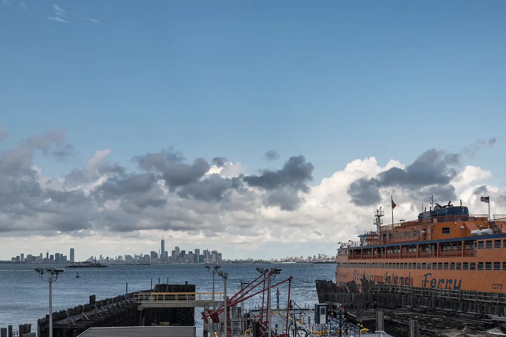
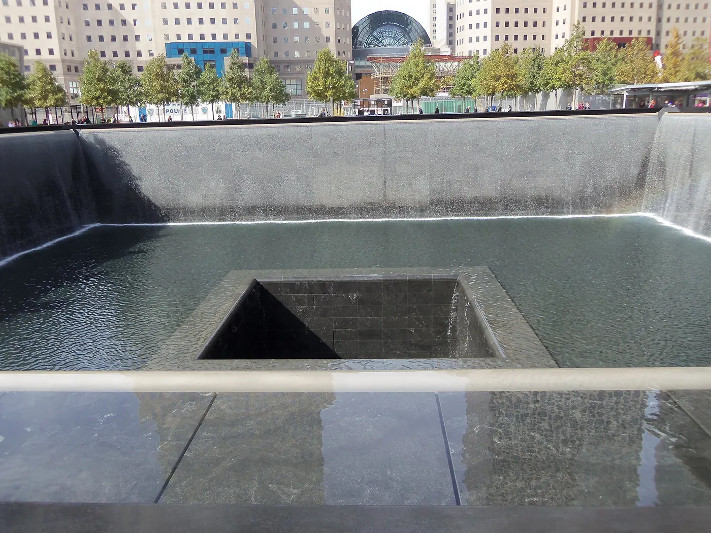

Statue of Liberty
A working harbour crossing, not just a monument. The ferry is the only way to land on Liberty Island, and the same ticket carries you on to Ellis Island and its immigration museum.
Checked 2 November 2026. Prices, opening hours and transport details were verified against official sources. Things change — confirm before you book. How we check.
The ferry is the visit
The statue is on an island in the middle of a working harbour, which means the day is shaped by boats. You clear airport-style security at Battery Park, cross on an authorised ferry, and land where the immigrants arrived.
The crossing itself is worth the fare. The statue grows as you approach, the Lower Manhattan skyline sits behind you, and the harbour traffic — ferries, tugs, container ships — carries on around the boat the whole way. Sit outside if the weather allows.
Liberty Island is the photo stop; Ellis Island is the story. The Immigration Museum is included in the ferry fare, and the building holds the records of the people who passed through it. Most visitors give Ellis Island half an hour and regret it, so leave yourself an hour.
Why this trip is worth the planning
Three hours of logistics buy you a harbour crossing and two islands with very different stories.
The only way to land
Statue City Cruises is the National Park Service-authorised operator, and there is no other way to set foot on Liberty Island. That exclusivity is why booking ahead matters more here than at any other attraction.
Ellis Island comes with it
The immigration museum is included in the ferry ticket rather than sold separately. It is the quieter half of the day and the part that explains why the statue was there in the first place.
The approach from the water
The classic view of the statue is from the deck of a boat, with the harbour around it. No photograph taken from land gets the same sense of scale or the same skyline behind it.
Tickets, security and crown access
Buy from the official operator, take the first boat you can, and decide about the crown long before you travel.
- Buy only at statuecitycruises.com. It is the sole National Park Service-authorised operator, and anyone selling on the street is not.
- Choose your departure point and time: Battery Park in Lower Manhattan is the usual choice, with Liberty State Park in New Jersey as the alternative.
- Decide between grounds, pedestal and crown. Pedestal access is a small price step; crown access needs a separate reservation months ahead, has 162 steps and no lift, and no bags are allowed.
- Arrive early for airport-style screening at Battery Park before boarding. The first departure has the shortest line.
- Plan 4–5 hours for both islands. The ferry loop includes Ellis Island and its museum in the fare.
Statue City Cruises — official ferry tickets
Reservations for the ferry, pedestal and crown are handled by the official concessioner. Crown and pedestal reservations run out well before the ferry itself does, so book as early as your dates are fixed.
Book on statuecitycruises.comOfficial operator. We take no commission on this link.
What most visitors get wrong
-
01
Take the first boat
The 08:30 or 09:00 departure clears security fastest and puts you on Liberty Island before the tour groups. You will also be back in Manhattan in time for lunch.
-
02
Treat the crown as its own trip
Crown reservations are a separate product that sells out months ahead, and the climb is 162 steps with no lift and nowhere to leave a bag. Do not assume you can decide on the day.
-
03
Ignore ticket sellers on the street
There is a persistent trade in fake Statue of Liberty tickets near Battery Park. Buy from statuecitycruises.com or the official ticket office and nothing else.
-
04
Leave time for Ellis Island
The museum is included and most people under-plan it. An hour is a reasonable minimum, and the building is the reason the island is worth the second stop.

Nearby and worth your time

9/11 Memorial & Museum
A few minutes from the ferry terminal, and the other essential Lower Manhattan stop.
One World Observatory
See the statue from above before you see it from the water. Best on a clear morning.
Free things to do in NYC
The Staten Island Ferry passes the statue for nothing, and the rest of the free list is here.
Statue of Liberty questions
Do I need to book the Statue of Liberty ferry in advance?
Yes. Ferries sell out, and the first departures sell out first. Book on the official Statue City Cruises site, which is the only National Park Service-authorised operator, and ignore anyone selling tickets on the street.
How long does the whole trip take?
Allow 4–5 hours for Liberty Island and Ellis Island, including security and the crossings. If you only have a morning, do Liberty Island and skip Ellis rather than rushing both.
Is crown access worth it?
The crown is a separate reservation that sells out months ahead, involves 162 steps and has no lift, and bags are not allowed — there are lockers on site. Pedestal access is a small price step and much easier to arrange.
Is Ellis Island included in the ferry ticket?
Yes. The ferry loop includes Ellis Island and its Immigration Museum in the fare. The island is the quieter half of the trip and, for many people, the more interesting one.
Can I see the Statue of Liberty without paying?
The free Staten Island Ferry passes close to the statue several times an hour from Whitehall Terminal. It does not land on Liberty Island, but it is a genuinely good view for nothing — see free things to do.